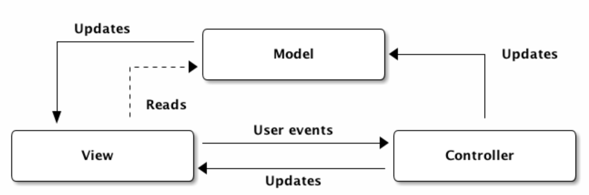

5. gyakorlat¶
MVC bevezetés¶
Az MVC architekturális model az egyik legegyszerűbb mind közül. 3 jól elkülöníthető réteget definiál melyek:
- Model (M)
- View (V)
- Controller (C)
A rétegek közül a felhasználó a View-n keresztül kommunikál. A felhasználói interakció valamilyen eseményeket generál, melyre a Controller a megfelelő hívásokat ejtheti meg. A Controller tekinthető egy középső rétegnek, mert a Model réteget csak ő képes adatmódosítási céllal elérni. Tehát a View-ból például sosem kezdeményezünk adatbázis műveleteket, mert az veszélyes lenne az alkalmazás szempontjából, illetve a View-nak nem is kell tudnia arról, hogy az adat honnan jön és hogyan van tárolva. Számára az a lényeg, hogy tudja hogy milyen adatokat kell megjelenítenie a felhasználó számára.
A Controller-ben végzünk minden üzleti logikával kapcsolatos tevékenységet. Például bizonyos mezők értéke alapján egyéb értékeket állíthatunk be automatikusan, melyet már a felhasználó nem lát.
A Model réteg több dolgot foglalhat magában. Egyrészt a Bean osztályainkat rendre itt szoktuk létrehozni (A Bean definícióját lásd később). Másrészt az úgynevezett DAO is itt szokott helyet foglalni, mely az adatelérésért felelős, legyen az egy adatbázisban vagy egy fájlban.
Ezen felül a View rétegnek nyilván szüksége lehet magukra a Bean-ekre is, ezért ő használhat ilyen jellegű olvasási műveleteket közvetlenül a Model rétegből.
Az imént leírtak grafikusan szemléltetve:

Model réteg¶
Bean osztályok¶
3 tulajdonsággal kell rendelkeznie egy Bean osztálynak:
- Van publikus default konstruktora
- Minden adattaghoz tartozik publikus getter/setter (másnéven accessorok)
- Az osztálynak szerializálhatónak kell lennie
Az első kettőt talán nem kell elmagyarázni, de mi is az a szerializálhatóság?
A Java rendelkezik az úgynevezett objektum szerializálással, ami szerint egy objektum reprezentálható egy bájt stream-mel, mely tartalmazza az objektum típusát, illetve hogy maga az objektum milyen típusú fieldekkel rendelkezik, továbbá a konkrét adatot is ezekhez a fieldekhez.
Másszóval a bájtstreamben benne van az objektum aktuális állapota (melyik field milyen értéket tárol).
Amennyiben ezt a bájtfolyamot valahova elmentjük ezt nevezzük szerializációnak.
Ez megfelel az objektum aktuális állapotának elmentésével.
Például lementhetjük egy objektum állapotát ilyen módon egy fájlba is, de például az is szerializáció, amikor egy objektumot JSON formára alakítunk (közkedvelt keretrendszer a Jackson ennek használatára).
Amikor az elmentett állapotot visszatöltjük (a memóriába), akkor deszerializációról beszélünk.
Ahhoz, hogy egy osztály objektumai szerializálhatóak legyenek egyszerűen meg kell valósítanunk a Serializable interface-t.
Esetünkben egyelőre nem fogjuk alkalmazni az interfészt.
Amint szükségünk lesz rá, akkor azt úgyis könnyen megtehetjük.
Data Access Object (DAO)¶
Miután elkészültek a bean-ek, elkezdhetünk dolgozni a DAO-n. A DAO (Data Access Object) az adatelérési réteget adja meg, mely a model rétegen belülre sorolható. A konkrét hozzáadás és listázás itt történik (mármint az adatok tárolása, legyen az memória, adatbázis, fájl vagy bármi egyéb). A controller rétegünk majd ezt fogja felhasználni. Fontos, hogy itt tartsuk mindig szem előtt, hogy interface mögé rejtsük az aktuális implementációt, mely biztosítja, hogy könnyen cserélhető legyen a megvalósítás.
Először készítsük el a jól definiált interface-t!
Ehhez készítsünk egy új interface-t UtazasDAO néven a hu.alkfejl.dao csomagba!
1 2 3 4 | |
Első körben 2 implementálandó metódussal rendelkezik, melyek már felhasználják ez előzőleg definiált bean osztályunkat.
A 3 megadott metódus lenyomat az összes kontakt listázásához, egy kontakt mentéséhez/módosításához és a törléshez lesz majd használható.
A hozzáadásnál fontos, hogy visszaadunk egy Utazas értéket is, melynek szerepe, hogy a controller felé jelezze, hogy sikeresen megtörtént a beszúrás vagy valami hiba végett ez meghiúsult (ebben az esetben adhat vissza null-t is akár).
Nyilván nem túl szofisztikált azt közölni a felhasználóval, hogy 'Valami hiba történt', mivel a felhasználó általában arra is kíváncsi, hogy mi volt a hiba oka.
Erre most nem térünk ki, de bővítési lehetőségként mindenki elkészítheti saját maga számára.
Miután megvan az interface, el kell készítenünk egy tényleges implementációt is hozzá.
Ehhez készítsünk egy osztályt az interface mellé ContactDAOImpl néven.
A megvalósításunk jelen esetben egy SQLite adatbázist fog használni, ugyanakkor a konkrét adatbázis nem jelenik meg a kódban, hiszen a JDBC - Java Database Connectivity API-t használjuk.
A JDBC egységes interfészt ad a különböző adatbázisok kezeléséhez, melyeket akár kombinálhatjuk is egy alkalmazáson belül.
A konkrét megvalósításokat, melyeket az adatbázis gyártók (vendorok) szolgáltatják, a JDBC DriverManager osztályán keresztül regisztrálhatjuk.
A DriverManager továbbá egy Connection factoryként is funkcionál, azaz tőle tudunk adatbázis kapcsolati objektumokat kérni a getConnection() factory metóduson keresztül.
A JDBC segítségével mind DDL (Data Definition Language) és DML (Data Manipulation Language) parancsokat is kiadhatunk, továbbá tárolt eljárásokat is meghívhatunk.
Az SQL utasításokhoz a JDBC a következő osztályokat biztosítja:
- Statement: Egyszerű paraméter nélküli utasításokhoz. Például
SELECT * FROM CONTACT. - PreparedStatement: Paraméteres lekérdezésekhez. Például:
SELECT * FROM CONTACT WHERE id = ?, ahol azidértékét a valamilyen tetszőleges értékre állíthatjuk majd be. - CallableStatement: Tárolt eljárások használatához/meghívásához. Például:
{call proc_name(?,?)}.
Ezek közül a későbbiekben az első kettőt fogjuk használni. A JDBC továbbá támogatja a tranzakciókezelést is, de ezzel a kurzuson nem foglalkozunk.
Magához a JDBC használatához nem kell semmilyen függőséget sem megadnunk, hiszen a JDBC részét képezi a Java SE-nek, azaz benne van az JDK-ban.
Viszont az adott adatbázis driver-ét biztosítani kell futásközben, így adjuk hozzá az SQLite drivert a pom.xml függőségeihez!
1 2 3 4 5 6 | |
Miután ezzel megvagyunk, az IntelliJ-n belül a jobb felső sarokban a Database fülre navigálva tudjuk létrehozni az adatbázisunkat (csak az Ultimate verzióban, amihez érdemes megigényelni a student license-t a Jetbreains-től).
Ezután a Database fülön a bal felső sarokban szereplő + jelre kattintva egy új adatbázist adathatunk hozzá.
Ehhez válasszuk a lenyíló menüben a Data Source -> SQLite menüpontot!
A Data Source-nak adhatunk egy tetszőleges nevet, majd a General beállításoknál a fájl alatt megadhatjuk, hogy melyik létező adatbázisfájlból dolgozunk.
Amennyiben új állományt szeretnénk használni, akkor File megadása sor végén válasszuk a + jelet és adjuk meg az adatbázis fájl helyét.
Az URL-t a JDBC-n belül is használni fogjuk majd, mivel ezzel az URL-el tudunk kapcsolatot létesíteni az adatbázis felé.
Amennyiben az IntelliJ-n belül nincs még letöltve az SQLite Driver, akkor Properties lapon beállíthatjuk (utólag jobb klikk az adatbázis kapcsolatra és Properties menüpont kiválasztása).
Ezután megjelenik a megfelelő nevű adatbázis a listában, amelyet lenyitva megtekinthetjük az adatbázishoz tartozó sémákat.
Itt a main-re jobb klikk után New -> Table menüpontot választva létrehozhatjuk a kívánt táblákat (később egy táblára jobb klikk, majd Modify Table opcióval módosíthatjuk annak összetételét).
Miután létrehoztuk a megfelelő táblákat jobb klikk a main sémára, majd SQL Scripts -> Generate DDL to Query Console.
Itt láthatjuk a legenerált DDL utasításokat, mely így néz ki:
1 2 3 4 5 6 7 8 9 10 11 | |
Mivel az adatbázis elérését többször is használni kívánjuk majd, így célszerű ezt az értéket kiszerveznünk egy állományba.
Hozzunk létre a /resources alá egy application.properties állományt majd adjuk meg benne az adatbázis URL-jét (shift + enter, ha nincs meg):
1 | |
Az URL-t mindenki módosítsa a saját környezetének megfelelően!
Ezután készítsünk egy segédosztályt, mely beolvassa ezt a properties állományt, melyben a kulcs-érték párokat adjuk meg (itt bármilyen tetszőleges párokat felvehetünk, amit majd később használni szeretnénk).
Erre a célra készítsünk a hu.alkfejl.dao csomag alá egy ConfigManager nevű osztályt, melynek a tartalma a következő:
1 2 3 4 5 6 7 8 9 10 11 12 13 14 15 | |
Mivel egy statikus metódusokat kínáló osztályról lesz szó, így a statikus init blokkban adjuk meg a properties fájl betöltését.
Ezután a property-ket eltároljuk egy lokális változóban, melyeket a getValue segítségével érhetünk el.
Ezután végre elkészíthetjük a DAO megvalósítását.
Először nézzük a field-eket és a Singleton tervezési minta alkalmazását!
1 2 3 4 5 6 7 8 9 10 11 12 13 14 15 16 17 18 19 20 21 22 23 24 25 26 27 28 29 30 31 32 33 34 35 36 37 38 39 40 41 | |
Maga az osztály két privát, statikus adattagot tartalmaz. A CONN-ba fogjuk betölteni az adatbázis elérési útvonalát, míg az instance a Singleton mintát követve az egyetlen példány lesz az osztyunkból.
A privát hozzáférésű konstruktorunk egy paramétert (a kapcsolati stringet) várja és ezt adja értékül a CONN-nak. Ezt követően egy védett blokkban betöltjük a szükséges JDBC drivert a Class osztály forName metódusa segítségével.
A getInstance függvény arra szolgál, hogy az első hívás alkalmával létrehozza az egyetlen példányt az osztályból, minden további esetben pedig ezen keresztül lehessen lekérni. A példában látott minta először ellenőrzi, hogy null-e az instance értéke, és ha igen, akkor lép tovább. Itt a többszálú rendszerek miatt alkalmazunk egy syncronized blokkot, aminek paramétere az osztályounk class implicit adattagja. Ezzel elérjük azt, hogy egyszerre csak egy szál férhez hozzá a blokk belsejéhez, mégpedig az, aki ezt a class példányt éppen birtokolja. LEgbelül ismét egy null-checket alkalmazunk, elkerülve ezzel zt, hogy minden szál, aki éppen hívja a getInstance-t felülírja a singleton példányt.
Mindezek után hozzáadjuk az SQL lekérdezéseket is az osztályunkhoz, amihez egy enum-ot fogunk használni. Ezt amiatt tehetjük meg, hogy bár a főleg arra használjuk, hogy felsorolások elemeit definiáljuk általuk, de az enumok is osztályok, így természetesen ugyanúgy tartalmazhatnak adattagokat és tagfüggvényeket, mint bármelyik másik osztály.
Tehát nincs más dolgunk, mint az enum-példányok deifiníciója után felvenni egy privát String adattagot a lekérdezés tárolására és definiálni a megfelelő konstruktort és gettert, hogy a későbbiekben is hozzá lehessen férni.
A következő kódrészlet a mentés opciót szolgáltatja számunkra.
1 2 3 4 5 6 7 8 9 10 11 12 13 14 15 16 17 18 19 20 21 22 | |
Az első érdekes dolog, hogy itt egy paraméteres lekérdezésünk lesz, így egy PreparedStatement-et használunk.
Ez arra szolgál, hogy a lekérdezés összeszerkesztésekor a paraméterek helyére kerülő értékeket olyan módon alakítsuk át, hogy azt az adatbázis ne tudja önmagában utasításként értelmezni, így elkerülhetjük az SQL-injection-t.
A következő érdekes momentum, hogy új kontakt létrehozásakor a c.prepareStatement(Query.INSERT.command, Statement.RETURN_GENERATED_KEYS) lekérdezést adjuk meg, melyben vegyük észre a RETURN_GENERATED_KEYS megadást.
Az executeUpdate metódus azt adja vissza, hogy hány sor módosult az SQL utasítás hatására, mely esetünkben 1 kell hogy legyen, ha sikerült, egyéb esetekben 0, máskülönben valamit nagyon rosszul csináltunk.
A listázáshoz tartozó függvény sokban hasonlít a beszúrásra, de az első amit észreveszünk, hogy a try-with-resources-ban immár a Statement stmt = c.createStatement(); ResultSet rs = stmt.executeQuery(Query.SELECT.command) utasítások szerepelnek. Ebből két dolog derülhet ki. Egyfelől, mivel az ehhez a függvényhez használt SQL-lekérdezésben nincsenek behelyettesítendő paraméterek, így nincs szükség arra, hogy átalakítsuk a tartalmát, másfelől itt viszont szeretnénk ténylegesen felhasználni azokat a rekordokat, amiket érint az utasítás végrehajtása, így a ResultSet ezeket fogja tartalmazni.
Az elemek kinyeréséhez a ResultSet osztály next függvényét használjuk, amely egyrészt egy logikai értékkel jelzi számunkra, hogy van-e még elem a halmazban, másrészt átállítja az aktuális elemet, így az az az alább látható módon kinyerhető (megjegyzendő, hogy a ResultSet getXXX függvényei int paraméteres változatban is léteznek, ahol a kívánt oszlop indexe adható meg). Végül a tábla tartalmából kiválogatjuk a nekünk lényeges elemeket azáltal, hogy a paraméterben kapott objektum értékeire szűrjük a listánkat a Stream api segítségével.
1 2 3 4 5 6 7 8 9 10 11 12 13 14 15 16 17 18 19 20 21 22 23 24 25 26 27 28 29 30 | |
find művelet megvalósítható a FILTER enum konstanssal is az alábbi módon például az úticél szerint (ez esetben a szűrést már az adatbázis-oldalon elvégezzük):
1 2 3 4 5 6 7 8 9 10 11 12 13 14 15 16 17 18 19 20 21 22 23 24 | |
View réteg¶
A megjelenítési réteg tartalmazza azokat az osztályokat, amikkel a felhasználó közvetlenül kapcsolatot teremt, vagyis a grafikus felület elemeit. A réteg elemei a controllerek segítségével módosítják az adatbázis tartalmát, de fontos, hogy azt közvetlenül nem érhetik el.